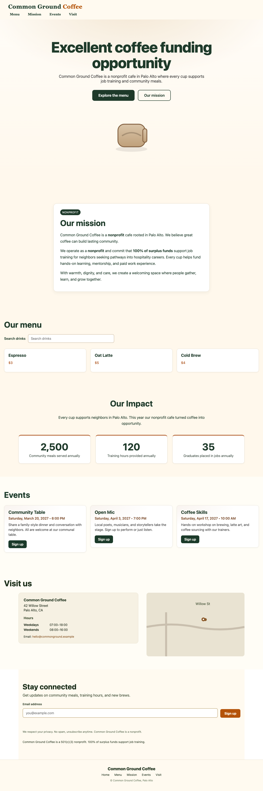
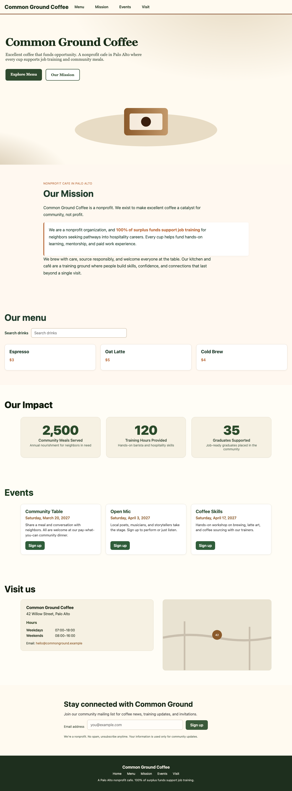
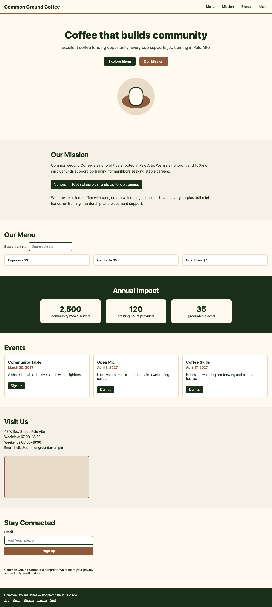

Fleet — 8 workers
First pass 187.7s · 61.1 output tok/s
Open generated website
Same plain starter and acceptance checks. All passed 63/63. Generated designs are preserved without manual editing. Timings exclude model loading and warmup.
First pass 187.7s · 61.1 output tok/s
Open generated website
First pass 263.6s · 40.5 output tok/s
Open generated website
First pass 564.4s · 15.8 output tok/s
Open generated website